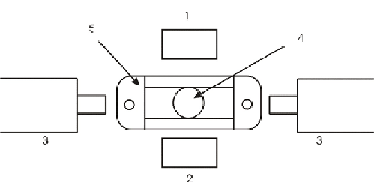

bobine de motorisation
Lors d'une mesure en chronométrie, les bobines de motorisation permettent à la bille dans la cuvette d'avoir un mouvement pendulaire. La diminution de l'amplitude dans le temps correspond à une augmentation progressive de la viscosité. Cette augmentation de la viscosité correspond à un phénomène de coagulation.
Principe physique du système de mesure
|
 |
|